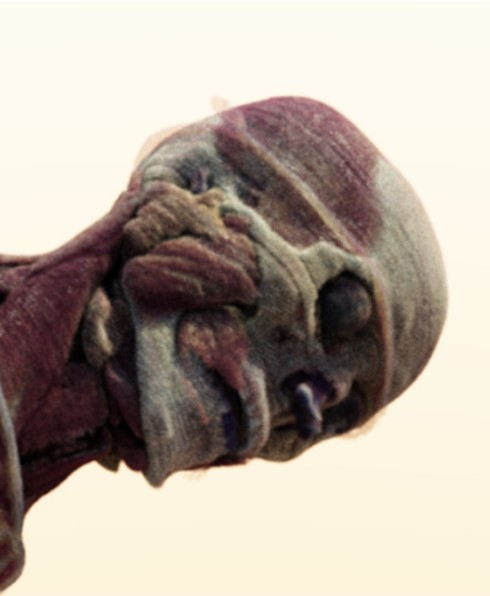
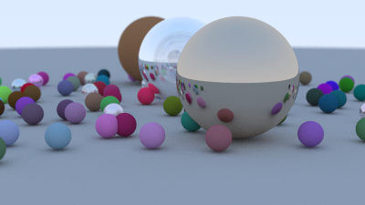
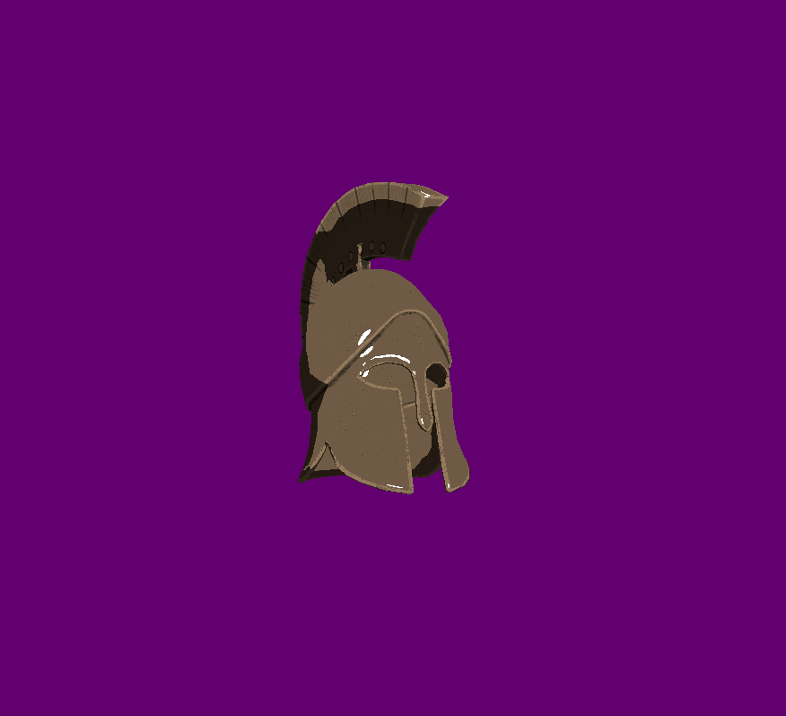
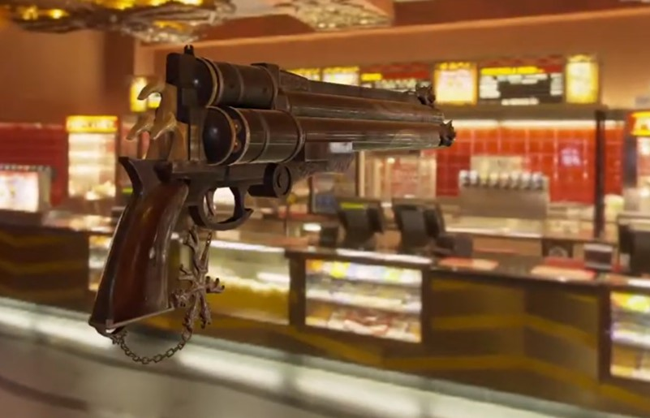
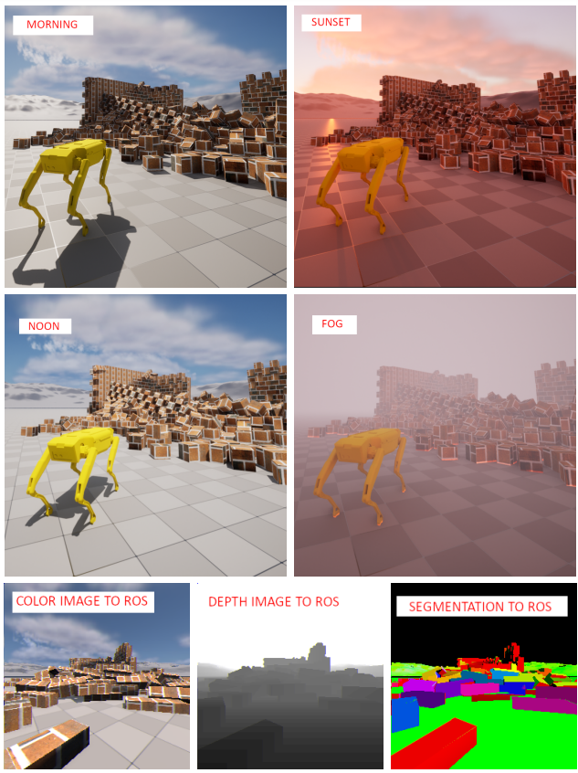
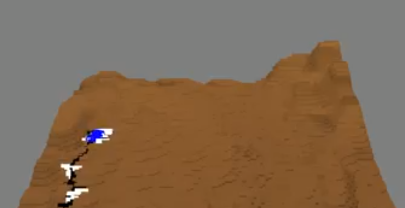
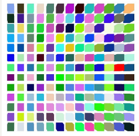
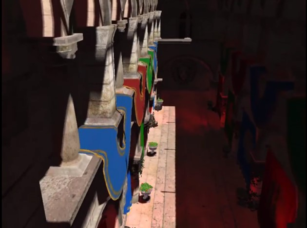
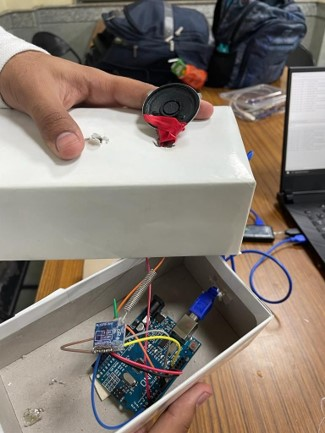
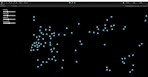

Research, Projects, and Publications
Research on Medical Imaging and Photorealistic Visualization of 3D Volumes
Research project with the Graphics Research Group at IIITD, in the field of 3D medical volume visualization
Monte Carlo Ray Tracing Using CUDA
A CUDA-based GPU implementation of a naïve Monte Carlo Raytracer.
Vulkan Renderer
A versatile renderer written in Vulkan to display meshes in multiple distinct styles.
OpenGL PBR Pipeline
Implementation of the Physically Based Render (PBR) Pipeline with Image Based Lighting (IBL) in OpenGL.
HEROES
An Unreal Engine-based Human and Emergency Robot Operation Education System.
Fluid Erosion Simulation
A Smooth Particle Hydrodynamics (SPH) based fluid erosion simulation.
Thesis on Differentiating between Natural and AI-Generated Images using Neural Networks

Thesis on augmenting images created by AI based Diffusion Models to allow current image classification models to achieve higher levels of accuracy
Measuring Cognitive Load in VR
A virtual reality experiment to measure and quantify cognitive load in VR applications. Built using Unity.
Sponza Model Render
Real-Time render of Crytek's Sponza Model using OpenGL.
De-Fence: LoRa based Hop-to-Hop Communication
Anav Chaudhary, Maanas Talwar, Avil Goel, Gaurav Singal, and Riti Kushwaha
2022. In 2022 Fourteenth International Conference on Contemporary Computing (IC3) (IC3- 2022).
Boids Simulation
A 2D simulation of the swarming and flocking behavior exhibited by various animals (most notably birds and fish).